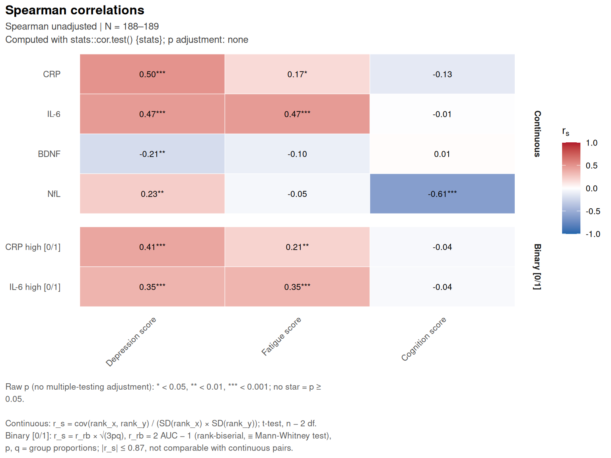
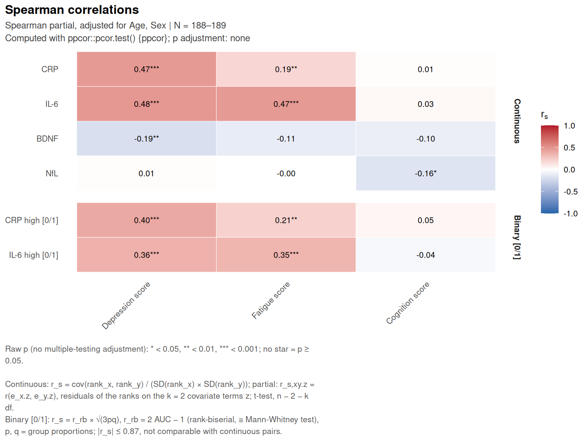
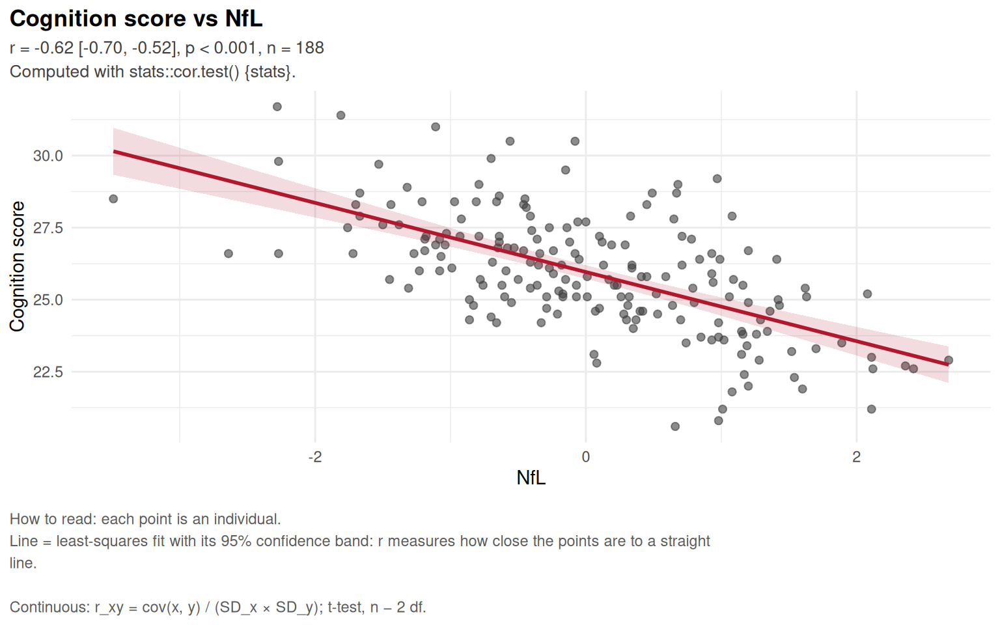
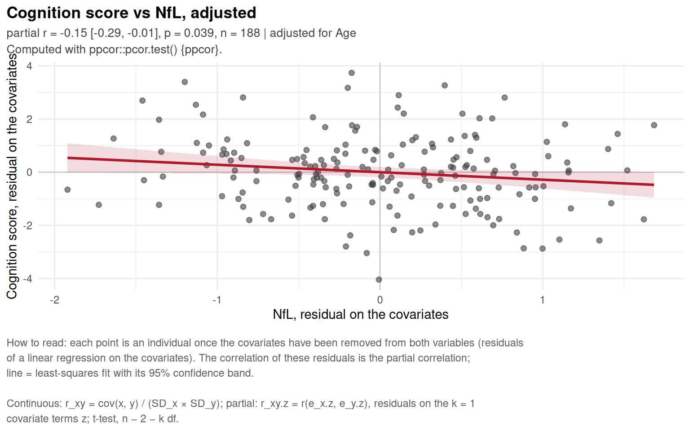
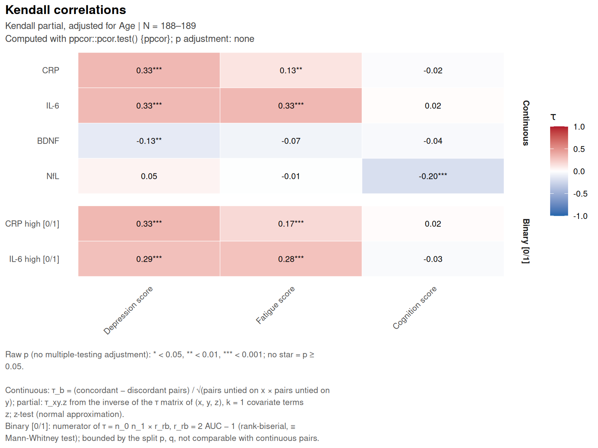

library(corrkit)
has_ppcor <- requireNamespace("ppcor", quietly = TRUE)
has_cor <- requireNamespace("correlation", quietly = TRUE)
d <- simulate_cor_data(n = 200)
lab <- attr(d, "labels")
biomarkers <- c("CRP", "IL6", "BDNF", "NfL", "BIN_CRP", "BIN_IL6")
scores <- c("depression", "fatigue", "cognition")Corrélations croisées et partielles
Corrélations croisées : des prédicteurs × des scores
Quand la question est « quels biomarqueurs sont liés à quels scores ? », la matrice complète mélange des paires sans intérêt (biomarqueur × biomarqueur). cor_cross() ne teste que les croisements :
cc0 <- cor_cross(d, biomarkers, scores, labels = lab)
cc0
#> <cor_cross> 6 x 3 Spearman correlations (unadjusted)
#> Raw p (no multiple-testing adjustment): * < 0.05, ** < 0.01, *** < 0.001; no star = p ≥ 0.05.
#> X depression fatigue cognition
#> CRP 0.50*** 0.17* -0.13
#> IL6 0.47*** 0.47*** -0.01
#> BDNF -0.21** -0.10 0.01
#> NfL 0.23** -0.05 -0.61***
#> BIN_CRP 0.41*** 0.21** -0.04
#> BIN_IL6 0.35*** 0.35*** -0.04plot_cor_cross(cc0)$plot
Les biomarqueurs binaires forment un bloc séparé (facette « Binary [0/1] »), pour la raison détaillée dans Variables binaires.
Ajuster ou non les p-values
Par défaut, les p-values sont brutes (p_adjust = "none"). Si vous demandez un ajustement (p_adjust = "BH", "holm"…), l’argument adjust_by fixe la famille de tests sur laquelle stats::p.adjust() est appliqué, et la légende la nomme :
adjust_by |
Famille | Quand l’utiliser |
|---|---|---|
"y" (défaut) |
les prédicteurs de chaque score (une colonne) | chaque score est une question à part : « quels biomarqueurs sont liés à la dépression ? » |
"x" |
les scores de chaque prédicteur (une ligne) | chaque biomarqueur est une question à part : « à quoi CRP est-il lié ? » |
"all" |
tous les tests du tableau | une seule question globale, ou un criblage |
Le choix entre p brutes et p ajustées, et celui de la méthode, sont détaillés dans Corrections pour tests multiples.
Corrélations partielles
Ce qu’est une corrélation partielle
Dans les données simulées, l’âge fait monter NfL et baisser la cognition. Une partie de la corrélation brute NfL–cognition passe donc par l’âge. La corrélation partielle retire l’effet des covariables z de chacune des deux variables, puis corrèle ce qui reste. Avec la notation de Makowski et al. (2020) : si \(e_{x.z}\) sont les résidus de la régression linéaire de x sur z,
\[r_{xy.z} = r(e_{x.z},\, e_{y.z}).\]
Pour Spearman, x, y et z sont d’abord remplacés par leurs rangs (comme dans ppcor). Le test est un t à n − 2 − k degrés de liberté, k étant le nombre de colonnes de covariables (un facteur à m niveaux compte pour m − 1).
res <- plot_cor_cross(cc_adj)
res$plot
Le sous-titre passe de « unadjusted » à « partial, adjusted for Age, Sex », et la formule de la légende devient celle de la corrélation partielle, avec le nombre k de termes de covariables.
Voir une corrélation partielle
plot_cor_pair() montre ce que mesure le coefficient. Sans covariable, c’est un nuage de points ; avec covariables, c’est le graphique des résidus (added-variable plot), dont la corrélation est la corrélation partielle :
plot_cor_pair(d, "NfL", "cognition", labels = lab, meth = "pearson")
plot_cor_pair(d, "NfL", "cognition", covariates = "age", labels = lab, meth = "pearson")
Trois calculs, un même résultat
Pour Pearson, la corrélation partielle et la pente de x dans lm(y ~ x + z) ont le même test (théorème de Frisch-Waugh-Lovell : même t, mêmes degrés de liberté). On peut le vérifier avec les deux moteurs de partial_cor_test() :
Z <- d[, c("age", "sex")]
base <- partial_cor_test(d$NfL, d$cognition, Z, meth = "pearson", engine = "base")
fit <- lm(cognition ~ NfL + age + sex, data = d)
c(residuals = base$p.value, lm_slope = summary(fit)$coefficients["NfL", "Pr(>|t|)"])
#> residuals lm_slope
#> 0.04001382 0.04001382pp <- partial_cor_test(d$NfL, d$cognition, Z, meth = "pearson", engine = "ppcor")
c(ppcor = pp$estimate, residuals = base$estimate)
#> ppcor residuals
#> -0.1507324 -0.1507324engine = "ppcor" (défaut) appelle ppcor::pcor.test() ; si le package n’est pas installé, ou si l’on demande engine = "base", le calcul se fait par les résidus. La légende indique toujours quelle fonction a servi.
Et correlation::correlation(partial = TRUE) ?
Le package correlation propose aussi des corrélations partielles, mais avec une autre définition de z : chaque paire est ajustée sur toutes les autres variables du jeu de données, pas sur des covariables choisies. Makowski et al. (2020) précisent que la partialisation y est une étape séparée qui crée un nouveau jeu de données, si bien que les t et les p peuvent différer d’autres implémentations comme ppcor, même si le coefficient est le même. Pour des covariables choisies (âge, sexe…), corrkit utilise donc ppcor::pcor.test().
sub <- na.omit(d[, c("NfL", "cognition", "age")])
cr <- as.data.frame(correlation::correlation(sub, partial = TRUE, p_adjust = "none"))
cr[cr$Parameter1 == "NfL" & cr$Parameter2 == "cognition", c("r", "p")]
#> r p
#> 1 -0.1509717 0.03863221
unlist(partial_cor_test(sub$NfL, sub$cognition, sub["age"], meth = "pearson")[c("estimate", "p.value")])
#> estimate p.value
#> -0.15097173 0.03916004Les tableaux
Le tableau large reprend la heatmap (même échelle de couleurs, mêmes étoiles) ; les notes répètent le statut des p-values, la formule et la lecture des variables binaires :
tbl_cor_cross(cc_adj)| Spearman correlations | |||
| Spearman partial, adjusted for Age, Sex | N = 188–189 | Computed with ppcor::pcor.test() {ppcor}; p adjustment: none | |||
| Predictor | Depression score | Fatigue score | Cognition score |
|---|---|---|---|
| Continuous | |||
| CRP | 0.47*** | 0.19** | 0.01 |
| IL-6 | 0.48*** | 0.47*** | 0.03 |
| BDNF | -0.19** | -0.11 | -0.10 |
| NfL | 0.01 | -0.00 | -0.16* |
| Binary [0/1] | |||
| CRP high [0/1]1 | 0.40*** | 0.21** | 0.05 |
| IL-6 high [0/1]1 | 0.36*** | 0.35*** | -0.04 |
| 1 [0/1] binary: r_s ≈ Mann-Whitney (rank difference between groups); |r_s| ≤ √(3pq) ≤ 0.87, not comparable with continuous variables | |||
| Cells: r_s and stars; colour = same scale as the heatmap (blue < 0 < red). Confidence intervals: tbl_cor_long(). | |||
| Raw p (no multiple-testing adjustment): * < 0.05, ** < 0.01, *** < 0.001; no star = p ≥ 0.05. | |||
| Continuous: r_s = cov(rank_x, rank_y) / (SD(rank_x) × SD(rank_y)); partial: r_s,xy.z = r(e_x.z, e_y.z), residuals of the ranks on the k = 2 covariate terms z; t-test, n − 2 − k df. | |||
| Binary [0/1]: r_s = r_rb × √(3pq), r_rb = 2 AUC − 1 (rank-biserial, ≡ Mann-Whitney test), p, q = group proportions; |r_s| ≤ 0.87, not comparable with continuous pairs. | |||
| Notation: Makowski D, Ben-Shachar MS, Patil I, Lüdecke D (2020), J Open Source Softw 5(51):2306, doi:10.21105/joss.02306. | |||
Le tableau long donne, pour chaque paire, n, le coefficient, son intervalle de confiance (z de Fisher sur n − k) et la p-value :
tbl_cor_long(cc_adj, sort_by = "abs")| Spearman correlations | ||||||
| Spearman partial, adjusted for Age, Sex | N = 188–189 | Computed with ppcor::pcor.test() {ppcor}; p adjustment: none | ||||||
| Predictor | Score | Pair | n | rₛ | 95% CI | p (raw) |
|---|---|---|---|---|---|---|
| IL-6 | Depression score | cont × cont | 188 | 0.48 | [0.36, 0.59] | < 0.001 *** |
| IL-6 | Fatigue score | cont × cont | 189 | 0.47 | [0.35, 0.58] | < 0.001 *** |
| CRP | Depression score | cont × cont | 188 | 0.47 | [0.35, 0.58] | < 0.001 *** |
| CRP high [0/1] | Depression score | bin × cont | 188 | 0.40 | [0.27, 0.52] | < 0.001 *** |
| IL-6 high [0/1] | Depression score | bin × cont | 188 | 0.36 | [0.23, 0.48] | < 0.001 *** |
| IL-6 high [0/1] | Fatigue score | bin × cont | 189 | 0.35 | [0.21, 0.47] | < 0.001 *** |
| CRP high [0/1] | Fatigue score | bin × cont | 188 | 0.21 | [0.07, 0.35] | 0.004 ** |
| BDNF | Depression score | cont × cont | 188 | -0.19 | [-0.33, -0.05] | 0.008 ** |
| CRP | Fatigue score | cont × cont | 188 | 0.19 | [0.04, 0.33] | 0.010 ** |
| NfL | Cognition score | cont × cont | 188 | -0.16 | [-0.30, -0.02] | 0.026 * |
| BDNF | Fatigue score | cont × cont | 189 | -0.11 | [-0.26, 0.03] | 0.118 |
| BDNF | Cognition score | cont × cont | 188 | -0.10 | [-0.25, 0.05] | 0.162 |
| CRP high [0/1] | Cognition score | bin × cont | 188 | 0.05 | [-0.10, 0.19] | 0.534 |
| IL-6 high [0/1] | Cognition score | bin × cont | 188 | -0.04 | [-0.19, 0.11] | 0.555 |
| IL-6 | Cognition score | cont × cont | 188 | 0.03 | [-0.12, 0.18] | 0.649 |
| NfL | Depression score | cont × cont | 188 | 0.01 | [-0.13, 0.16] | 0.853 |
| CRP | Cognition score | cont × cont | 188 | 0.01 | [-0.14, 0.16] | 0.861 |
| NfL | Fatigue score | cont × cont | 189 | -0.00 | [-0.15, 0.15] | 0.997 |
| Pair: cont = continuous, bin = binary[0/1]. Bold = p < 0.05. | ||||||
| Raw p (no multiple-testing adjustment): * < 0.05, ** < 0.01, *** < 0.001; no star = p ≥ 0.05. | ||||||
| Continuous: r_s = cov(rank_x, rank_y) / (SD(rank_x) × SD(rank_y)); partial: r_s,xy.z = r(e_x.z, e_y.z), residuals of the ranks on the k = 2 covariate terms z; t-test, n − 2 − k df. | ||||||
| 95% CI: Fisher z transformation, SE = √(1.06 / (n − 3 − k)) (Fieller et al. 1957); computed with correlation::cor_to_ci() {correlation}. | ||||||
| Binary [0/1]: r_s = r_rb × √(3pq), r_rb = 2 AUC − 1 (rank-biserial, ≡ Mann-Whitney test), p, q = group proportions; |r_s| ≤ 0.87, not comparable with continuous pairs. | ||||||
| Notation: Makowski D, Ben-Shachar MS, Patil I, Lüdecke D (2020), J Open Source Softw 5(51):2306, doi:10.21105/joss.02306. | ||||||
Avec un ajustement, une colonne « p (adjusted) » s’ajoute et les lignes sont regroupées par famille, ce qui permet de relire l’ajustement à la main :
tbl_cor_long(cor_cross(d, biomarkers, scores, covariates = c("age", "sex"), labels = lab, p_adjust = "BH"))| Spearman correlations | ||||||
| Spearman partial, adjusted for Age, Sex | N = 188–189 | Computed with ppcor::pcor.test() {ppcor}; p adjustment: stats::p.adjust() {stats} | ||||||
| Predictor | Pair | n | rₛ | 95% CI | p (raw) | p (adjusted) |
|---|---|---|---|---|---|---|
| Depression score | ||||||
| CRP | cont × cont | 188 | 0.47 | [0.35, 0.58] | < 0.001 | < 0.001 *** |
| IL-6 | cont × cont | 188 | 0.48 | [0.36, 0.59] | < 0.001 | < 0.001 *** |
| BDNF | cont × cont | 188 | -0.19 | [-0.33, -0.05] | 0.008 | 0.010 ** |
| NfL | cont × cont | 188 | 0.01 | [-0.13, 0.16] | 0.853 | 0.853 |
| CRP high [0/1] | bin × cont | 188 | 0.40 | [0.27, 0.52] | < 0.001 | < 0.001 *** |
| IL-6 high [0/1] | bin × cont | 188 | 0.36 | [0.23, 0.48] | < 0.001 | < 0.001 *** |
| Fatigue score | ||||||
| CRP | cont × cont | 188 | 0.19 | [0.04, 0.33] | 0.010 | 0.015 * |
| IL-6 | cont × cont | 189 | 0.47 | [0.35, 0.58] | < 0.001 | < 0.001 *** |
| BDNF | cont × cont | 189 | -0.11 | [-0.26, 0.03] | 0.118 | 0.141 |
| NfL | cont × cont | 189 | -0.00 | [-0.15, 0.15] | 0.997 | 0.997 |
| CRP high [0/1] | bin × cont | 188 | 0.21 | [0.07, 0.35] | 0.004 | 0.008 ** |
| IL-6 high [0/1] | bin × cont | 189 | 0.35 | [0.21, 0.47] | < 0.001 | < 0.001 *** |
| Cognition score | ||||||
| CRP | cont × cont | 188 | 0.01 | [-0.14, 0.16] | 0.861 | 0.861 |
| IL-6 | cont × cont | 188 | 0.03 | [-0.12, 0.18] | 0.649 | 0.779 |
| BDNF | cont × cont | 188 | -0.10 | [-0.25, 0.05] | 0.162 | 0.486 |
| NfL | cont × cont | 188 | -0.16 | [-0.30, -0.02] | 0.026 | 0.156 |
| CRP high [0/1] | bin × cont | 188 | 0.05 | [-0.10, 0.19] | 0.534 | 0.779 |
| IL-6 high [0/1] | bin × cont | 188 | -0.04 | [-0.19, 0.11] | 0.555 | 0.779 |
| Row groups = family of the p adjustment (the 6 predictors of each score (column)). | ||||||
| Pair: cont = continuous, bin = binary[0/1]. Bold = adjusted p < 0.05. | ||||||
| Adjusted p, Benjamini-Hochberg (FDR) over the 6 predictors of each score (column): * < 0.05, ** < 0.01, *** < 0.001; no star = adjusted p ≥ 0.05. | ||||||
| Continuous: r_s = cov(rank_x, rank_y) / (SD(rank_x) × SD(rank_y)); partial: r_s,xy.z = r(e_x.z, e_y.z), residuals of the ranks on the k = 2 covariate terms z; t-test, n − 2 − k df. | ||||||
| 95% CI: Fisher z transformation, SE = √(1.06 / (n − 3 − k)) (Fieller et al. 1957); computed with correlation::cor_to_ci() {correlation}. | ||||||
| Binary [0/1]: r_s = r_rb × √(3pq), r_rb = 2 AUC − 1 (rank-biserial, ≡ Mann-Whitney test), p, q = group proportions; |r_s| ≤ 0.87, not comparable with continuous pairs. | ||||||
| Notation: Makowski D, Ben-Shachar MS, Patil I, Lüdecke D (2020), J Open Source Softw 5(51):2306, doi:10.21105/joss.02306. | ||||||
tbl_cor_cross() et tbl_cor_long() acceptent aussi directement la liste renvoyée par plot_cor_cross() :
res <- plot_cor_cross(d, biomarkers, scores, covariates = c("age", "sex"), labels = lab)
res$plot
tbl_cor_cross(res)
cat(res$note) # note complète sur les variables binairesKendall
meth = "kendall" fonctionne partout ; les versions partielles demandent ppcor. Le test est alors un z (approximation normale) et la légende l’indique.
plot_cor_cross(d, biomarkers, scores, covariates = "age", labels = lab, meth = "kendall")$plot
Références
- Makowski D, Ben-Shachar MS, Patil I, Lüdecke D (2020). Methods and algorithms for correlation analysis in R. Journal of Open Source Software 5(51):2306. doi:10.21105/joss.02306
- Kim S (2015). ppcor: an R package for a fast calculation to semi-partial correlation coefficients. Communications for Statistical Applications and Methods 22(6):665-674. doi:10.5351/CSAM.2015.22.6.665
- Fieller EC, Hartley HO, Pearson ES (1957). Tests for rank correlation coefficients. I. Biometrika 44(3/4):470-481.